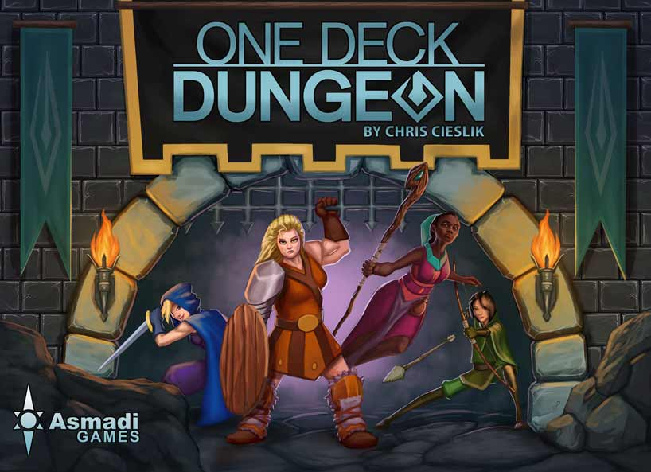
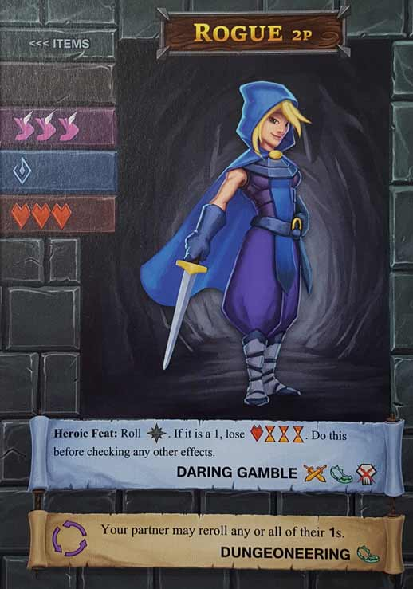
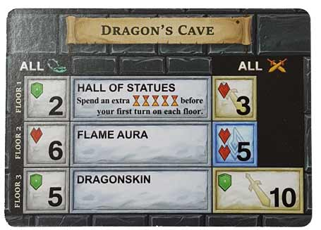
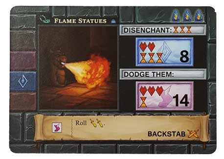
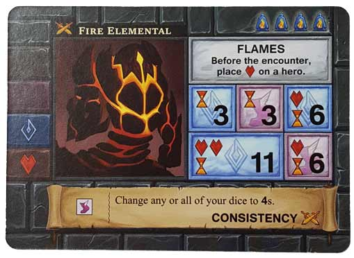
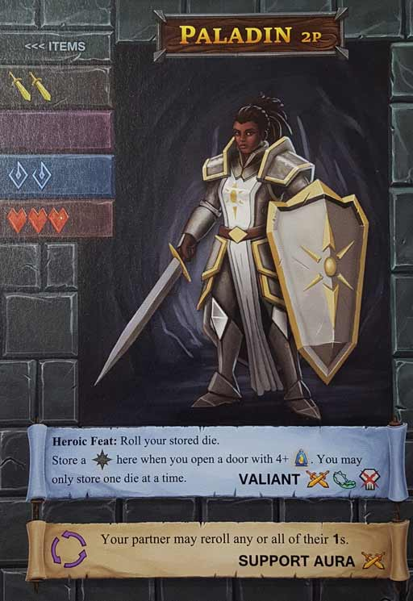
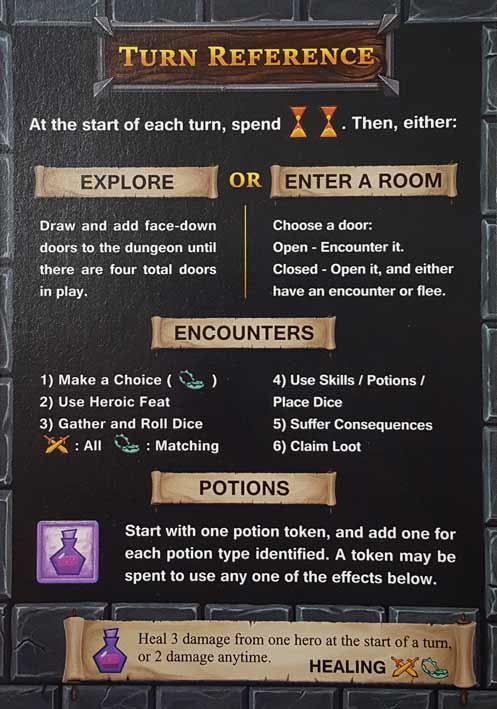
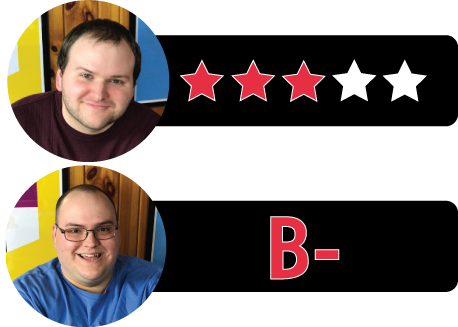

In this One Deck Dungeon review, D and Will analyze the 1-2 player “roguelike” game from designer Chris Cieslik and publisher Asmadi Games. After selecting one of the preset characters (Rogue, Archer, etc.), players delve through a dungeon of unforgiving encounters. But they don’t just have monsters to worry about, as the dungeon itself features additional challenges with each passing level. Is One Deck Dungeon too difficult? Is it overly reliant on dice rolling? Find out the answers to these questions and more in the review(s) below.

D reviews One Deck Dungeon
 (Author’s
note: this review is meant to accompany our gameplay video and will not
go in-depth on the game’s rules. If you’re interested in learning how
the game is played, please watch the video. It’s not bad.)
(Author’s
note: this review is meant to accompany our gameplay video and will not
go in-depth on the game’s rules. If you’re interested in learning how
the game is played, please watch the video. It’s not bad.)
I had high hopes for One Deck Dungeon. After recently having a good time with Deep Space D-6, I was looking forward to tackling a somewhat similar game in a fantasy setting. Unfortunately, I came away from it feeling frustrated and disappointed. One Deck Dungeon is a really good idea and the end product is close to being what it needs to be, but there are a couple of major problems that, in my opinion, hold it back from greatness.
My issues with One Deck Dungeon are similar to the issues I had with Tiny Epic Galaxies when I reviewed that last year. Both games seem to be pitched as being a meaningful experience on a small scale, with a short playtime and a light-ish weight difficulty-wise. And while both games’ components certainly fit neatly into very small boxes, there are problems with what you have to do with those components. And I feel like those problems are worse in ODD than they were in TEG. First of all, the idea that this game can be played and won in 30 minutes is absurd. That would require successfully making it through each floor in less than ten minutes. I’m sorry, but that’s basically impossible. Even if you’re playing by yourself and not being forced to cooperate with anyone, this is easily a 60+ minute game if you’re actually strategizing and doing well. Of course, most playing times listed on board game boxes are lies. I just find these lies more egregious when a game seems to exaggerate its simplicity as a feature.
The bigger issue is with the gameplay. Similar to Tiny Epic Galaxies, One Deck Dungeon has a simple gameplay loop that’s easy to learn and should be conducive to quick, fluid play. Neither, however, ends up working out how you’d expect. At least with TEG, you get a game that ends up being more complicated and strategic than expected. This isn’t a flaw, necessarily, and is likely to delight certain players. Potential customers should mostly just be aware that it isn’t going to be the quick, breezy experience you might anticipate, and that it will probably be too much for younger children. ODD, on the other hand, gets bogged down by a lot of minutiae that doesn’t really make the game much more complicated, just noticeably slower and more difficult. It feels like designer Chris Cieslik started with a good idea and then felt compelled to include every additional idea he had if it worked well enough. And yeah, everything works well enough, but I also think the game could use some tightening up.
I understand basically all of the decisions that were made from a mechanical standpoint. I play a lot of video games, and while rogue-likes aren’t really my cup of tea, I know their conventions and how they work. For example, each floor of the dungeon adding additional challenges on top of what you previously encountered makes sense when you consider the game’s intention. However, I don’t like how this feature is implemented. It’s too easy to forget about (we literally had to restart our video because we forgot about it the first time), and it seems to make things unnecessarily difficult. I would have preferred something like a separate deck of cards with unique challenges, with one drawn every time you start a new floor. A full card could be presented more prominently than the semi-hidden dungeon card, and they could either be stacked or not depending on the difficulty you wish to play at. This is just one of a handful of ways where I think the game is committed perhaps too strongly to replicating its inspiration.
Another way is its difficulty. The game comes with additional rules for playing it as a campaign, and I feel like this is the correct way to play One Deck Dungeon. Being a rogue-like and as difficult as it is, the idea of playing it repeatedly with certain things carrying over from one session to the next just seems logical. Death isn’t such a big deal when you can just respawn a little bit stronger. But as a one-off experience, I think the game struggles. Dice rolling is obviously, and I guess literally, a crapshoot, and the game doesn’t provide enough ways to mitigate the possibility of a colossal dice failure. The last turn in our video provides a perfectly good example of this. Having more dice to roll might improve your odds, but at the end of the day they’re still dice.
Overall, I think One Deck Dungeon is a game that features some really clever ideas and does a commendable job of bringing the rogue-like genre into the physical realm. It’s also very attractive and polished – clearly a lot of time and effort went into the design and production. I just don’t think it offers the fast, fun, and satisfying gameplay that I was hoping for. There’s definitely an audience for this game; it’s just not me. If you’re someone looking for a game to be played solo or as a pair and are willing to commit to several playthroughs, then One Deck Dungeon might be a good choice for you. But if you’re looking for a game that provides a good, individual experience only once in a while, you might want to look elsewhere.
D’s Rating: Three Stars out of Five.
Will reviews One Deck Dungeon
 When
it comes to 1-player “roguelikes”, or in this case a 1-2 player
roguelike, I really have very little experience and as thus, knowledge.
With that in mind, I realize that it may be a difficult task for me to
gauge One Deck Dungeon’s merits, considering I don’t have much
in my memory bank to compare it to. That being said, I can still
objectively judge it for what it is on its own, and that leads me to my
main point – it’s good. I’ll elaborate shortly, but yeah, it’s an above
average tabletop game that left me rather frustrated. And yet, I look
forward to diving into it once more.
When
it comes to 1-player “roguelikes”, or in this case a 1-2 player
roguelike, I really have very little experience and as thus, knowledge.
With that in mind, I realize that it may be a difficult task for me to
gauge One Deck Dungeon’s merits, considering I don’t have much
in my memory bank to compare it to. That being said, I can still
objectively judge it for what it is on its own, and that leads me to my
main point – it’s good. I’ll elaborate shortly, but yeah, it’s an above
average tabletop game that left me rather frustrated. And yet, I look
forward to diving into it once more.
Component-wise, One Deck Dungeon is surprisingly solid, given its affordable price and compact packaging. The cards are decent, as are the dice. The version we purchased came with the heart-shaped, wooden health markers, which are definitely better than the square ones I’ve read about. Our white potion markers are square though, so that kind of stinks. But hey, at least they’re all made out of wood. Also, I enjoy the artwork, which fits the fantasy theme quite well. It’s indeed somewhat cliché in style, but then again, all of the characters are female, so that’s cool.
Speaking of theme, I wish that the gameplay would mesh with it as well as the art does. One Deck Dungeon works fine as a fantasy game, but it would also work as a war game or a sci-fi game. The concept of encountering enemies and “perils” as you delve through the levels of a dungeon would function just as well if you were traversing the decks of a spacecraft or the floors of a bunker. Sure, One Deck Dungeon adequately scratches my fantasy itch, but as Jim Carrey once said in Liar Liar, “I’ve had better”.
Despite this issue with theme, One Deck Dungeon features pretty satisfying gameplay, or at least it does when the dice are going your way. I especially appreciate the game’s use of character stats (strength, agility, magic, and health). It’s simple – if you have three strength, you roll three strength dice during encounters – and it’s consistent in its function throughout the stat types (except for health, which simply determines how much health you have). But not only that, how these stats come into play during combat is really clever. Say for instance that you’re up against a Glooping Ooze, whose card shows several color-coded boxes with numbers in them. Those boxes tell you what kind of dice you can roll and what numbers you need to beat to defeat that creature. Need magic to defeat it? Well then, you roll as many blue dice as your stats allow and let fate decide the rest.
Normally, this would be the moment that I’d rail on and on about how the luck of dice rolling destroys all of this game’s meaningful moments. Truth is, I’m tired of saying that because of one basic truth – dice rolling is fun. Sure, I don’t want it in every strategy game I play, but occasionally it serves a purpose, and it definitely does so in One Deck Dungeon. In this game, you’re not playing as some basically immortal, level 20 D&D character. Quite the opposite in fact – you’re rather squishy in this game, and I like that. If you fail against an enemy, then you probably over-estimated the strength of your character and hopefully you survived to adapt. If not, One Deck Dungeon is a (relatively) short experience, so shuffle up and start over.
Understandably, some people may not have the temperament to start over, and this game does exacerbate its luck factor and subsequent negative qualities from time to time. By that, I mean that the crap that comes with dice rolling is often more apparent in One Deck Dungeon because the gameplay is so unforgiving, at least in a 2-player session. To be more specific, I really dislike that each level of the dungeon adds new challenges to overcome in addition to the enemy and peril cards. You have to use up extremely valuable dice in order to deal with these additional nuisances, which is always annoying. And it’s also really easy to forget the dungeon challenges because they’re separate from the encounter cards. Yes, you can help yourself and level up your characters to earn extra dice to roll, but that process takes time (and upgrades away from your characters).
Then again, all of the encounter cards become beneficial to you once you defeat them. I really like the multitude of options you have with them – you can use them to gain XP and levels, collect special items, or even add new skills. Both items and skills provide you with additional dice or ways to receive more dice, which helps mitigate the overwhelming need for them. But it never quite feels like enough, especially with the skills that too often require sacrificing a certain kind of dice in order to gain another kind. Alternatively, some skills might allow you to modify your dice roll, which again is certainly welcome, but it’s usually not as useful as other options. If I had a say, I would’ve suggested to the designer to somehow add modifiers to the dice rolling (à la D&D). That probably would’ve eased the proceedings a bit, and it would’ve kept them from adding more dice to the rather tiny game box.
Overall though, I enjoyed my time with One Deck Dungeon, which is strange because I found quite a bit of it to be frustrating. Since I know bad luck affected my time with it, I guess that makes it all the more attractive to go back and beat (if the Gods permit it). And the fact that this game is brief definitely aids it a bit, since replaying it never feels like a chore. I should also point out that this game features a campaign mode and a 4-player variant, which earns it additional points in my eyes. One Deck Dungeon is easy-to-learn, properly challenging, and occasionally irritating… but it’s also fun. Dice rolling is fun, fantasy monsters are fun, and hell, you could even roleplay if you wanted to. If you think you can handle it, I recommend trying it out.
I give One Deck Dungeon a: B-
One Deck Dungeon – Board Crazy’s Ratings

Leave a Reply
You must be logged in to post a comment.